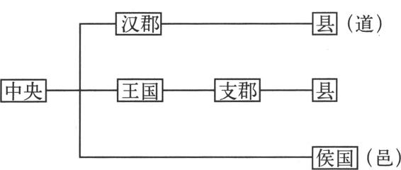
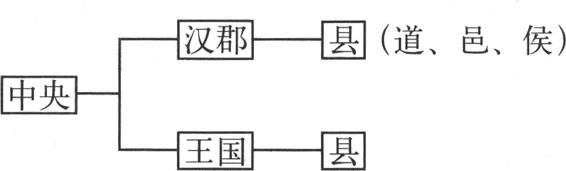
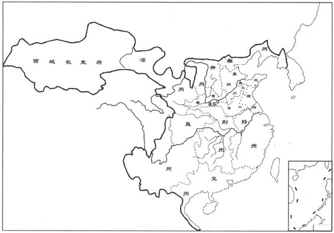

秦统一后，秦始皇采纳廷尉李斯的建议，废除了分封诸侯制，推行郡县制。每郡设郡守、郡尉、监御史等官。这些郡的官员，都由中央朝廷直接任命，而且可以定期更换。郡守是一郡的行政长官，除了所辖各县的长官由中央任命外，一郡的属吏都由郡守从本郡人士当中辟举。郡尉典武职甲卒，不是郡守的属官，而是直接领受朝廷的命令。监御史负责监察郡治，又叫郡监，隶属于御史中丞，是中央监临地方的官员。郡之下再辖县，每个县依据大小不同，设令（大县）或长（小县）。
秦初并天下时，将全境分为36郡。［2］之后，秦向南占领了五岭以南的南越地（今广东、广西及越南东北部），然后设立了南海、桂林及象郡等三郡；向北将活动在河套一带的匈奴人赶走，在阴山以南、黄河以东的区域内设置了九原郡。此后，秦又陆续从已置的郡中分出一些新郡，这样，到了秦代末年，除去都城咸阳附近关中平原为秦内史的辖区外，史书上记载的秦郡共有48个，统辖大约一千个县级政区。［3］另外，秦在征服的少数民族政权区域内，并未置县，而是设立了与县同级的道来进行管理。
秦朝郡县制的全面实行，标志着中央集权制国家的形成，中国从此成为皇权专制的中央集权制国家。这种以郡县制为表现形式的行政区划，为后世历代所遵奉，持续了二千余年的时间。
汉朝建立之初，汉高祖刘邦将七个异姓功臣分封为诸侯王（即燕王臧荼、韩王信、赵王张耳、楚王韩信、淮南王英布、梁王彭越、长沙王吴芮）。由于七个异姓诸侯王手中握有重兵，其封地占据了当时汉朝整个疆域的一半，而且是东部最富庶的地区，而汉郡却只有15个，实际上已对刘邦的统治构成了很大的威胁。于是在随后的几年时间里，刘邦寻机将长沙王之外的其他六个异姓诸侯王逐一翦除。
在来自异姓诸侯王的威胁基本扫除之后，刘邦又开始分封同姓诸侯王，借以达到屏藩汉廷，不致重蹈秦朝短命覆辙的目的。刘邦分封的同姓诸侯王国采用的是分封制与郡县制的混合体。在诸侯王国之下，依然有郡县，这些属于诸侯王国的郡被称做支郡，名义上虽然还是属于中央政权的，但实际上已在诸侯王的直接管辖之下了。除了诸侯王以外，刘邦还分封了一百多位功臣为列侯，建立侯国，其地位与县相当，但直接隶属中央。汉初所实行的行政区划，可以用下图直观地表示出来：

然而，这些同姓诸侯王国与异姓的长沙国在地域上连成一片，总封域占到当时汉朝整个疆域的一半以上，而汉中央政权直接控制的仅有15个郡，从面积上说，比高帝五年异姓诸侯王国存在时的汉郡领域还小。另外，诸侯王享有特权，可以任命所辖支郡的郡太守以下的官员及征收赋税徭役。因此，诸侯王国的存在与中央政权之间不可避免地会产生矛盾。
刘邦死后，执政的吕后曾采用分封外戚为王的方法，试图抑制同姓诸侯王的发展。这种做法自然引起了刘氏宗室的不满，因此，在文帝即位后，除掉了诸吕，恢复了同姓王国的故地。但是这些同姓诸侯王国毕竟是中央政权的潜在威胁，于是文帝采纳大臣贾谊的以亲制疏与“众建诸侯少其力”的建议，一方面用与自己血缘近的诸侯王国限制与自己血缘远的诸侯王国的势力，一方面又通过分地的方法将诸侯王国的辖境变小，数目增加。异姓的长沙国也在文帝的最后一年，因无后而国除，所属三郡之地归于汉廷。
汉景帝执政后，又采纳御史大夫晁错提出的削藩之策，将诸侯王国下辖的支郡削掉，收归中央。虽然这一举措直接触及了诸侯王们的利益，曾一度引发了“吴楚七国之乱”，但景帝最终平定了这场叛乱，并乘机将诸侯王的支郡收归汉廷所有，使诸侯王国领域变得只有一郡之地。诸侯王自己任命官吏和征收赋税的特权，也被同时剥夺，如此一来，诸侯王国的地位大大下降，已经变得和一般的汉郡没有太大的差别了。汉代的行政区划也相应地简化为郡（国）县二级制，具体形式如下：

同姓诸侯王国在历经了景帝的削藩之后，虽然王国变得仅领一郡之地，但是有些大的王国境内仍然是数十座城池相连，势力依然不小。武帝执政后，为了防止这些诸侯王国互相联合起来，反抗中央政权，于是采纳谋臣主父偃的建议，颁布“推恩”令，强迫诸侯王用自己的领地分封王子侯国后别属汉郡，借以达到缩小诸侯王国领域的目的。这样经过几代以后，诸侯王国的领地已大为缩小。到了西汉末年，有的诸侯王国变得只有三四个县的范围了。经过推恩法，诸侯王国的实力已严重削弱，再也无法构成对中央政权的威胁了。
在汉朝内部潜在的诸侯王国分裂割据威胁基本消除之后，汉武帝便将注意力转向境外，开始了开拓疆土的活动。
在西南夷地区，汉武帝通过多次用兵，将这一地区完全纳入了汉朝的版图之内，设置了犍为、牂柯、武都、汶山、沈黎、越巂、益州等七郡，使汉的西南疆界达到今天的高黎贡山与哀牢山一线，按照郡县制的体制，由中央政府来直接进行管理。后沈黎、汶山郡二郡先后撤销，辖地都并入了邻近的蜀郡。
在岭南地区，武帝派兵平定了南越国，把原来秦朝所设的桂林、南海、象郡三郡之地，分置成南海、苍梧、合浦、鬱林、象郡五个郡。又将原南越王赵佗在今越南境内设置的交趾、九真二郡，承袭下来，并在这二郡以南设立了日南郡，汉朝的南疆由此扩展到达了今越南的中部地区。后汉军又渡海，夺取了海中大洲（今海南岛），在那里设立了儋耳郡与珠崖郡两个郡（后儋耳、珠崖二郡又先后放弃）。至此，武帝在岭南地区先后共设置了十个郡。
在北境，汉军先从匈奴手中收复了河套南部的“河南地”，设立了朔方、五原二郡。随后，又攻取了河西走廊，在这一地区设置了酒泉、武威、张掖、敦煌四郡，这样，汉朝便控制了整个河西走廊与湟水流域，阻断了匈奴与西羌的联系，打通了通往西域的道路。
在东北地区，武帝派军灭掉朝鲜及其附庸，在朝鲜半岛上设置了乐浪、玄菟、真番、临屯四郡（后罢真番、临屯二郡），辖境到了今汉江流域。
汉武帝时，由于边地的开拓，新设置了许多汉郡，又加上从已有的旧郡当中分出许多新郡，因此汉郡的数目在武帝太初元年（前104），已高达91个，再加上18个王国，其时全汉共有109个郡国。
据《汉书·地理志》记载，至西汉平帝元始二年（公元2年），全国共有103个郡国（其中汉郡83个，诸侯王国20个），下辖1587个县（侯、邑、道）。此外，西汉还在宣帝时设置了西域都护府，管辖玉门关、阳关以西，天山以南，葱岭以东的西域36国。
东汉承继西汉的制度，在建国初年，光武帝刘秀依然推行郡（国）县两级制，并对当时的政区做了一些调整，省并了十个故西汉王国和四百多个县（侯、邑、道），终光武帝一朝，形成了12王国、81汉郡的格局。其后，陆续又有所增析，至明帝永平十五年（72年），有17王国、79汉郡，郡国总数达到96。到了安帝时，为了加强对边疆地区内附少数部族的管理，又先后将犍为属国、广汉属国、蜀郡属国、张掖属国、张掖居延属国、辽东属国等六个重要属国分别由原郡中划出，治民比郡，成为正式的行政区划。至顺帝永和五年（140），全国共有106个郡国（其中汉郡85个，王国21个），下辖1180个县（侯、邑、道、公国）［4］。
灵帝以降，特别是献帝时期，天下大乱，朝政掌于权臣之手，汉廷已名存实亡，其时各地不少太守、州牧自行立郡，且旋置旋废，使得这一时期郡国变化十分复杂。至建安二十四年，郡国总数增至137个（其中汉郡为123个，王国为14个）。
另外，东汉末年，出于镇压黄巾起义的需要，在灵帝中平五年（188），朝廷派中央的高级官员——九卿，出任州牧，“镇安方夏”，“州任之重，自此而始”（《后汉书·刘焉传》）。至此，将西汉武帝时开始出现的用于巡视各郡吏治的州（刺史部），由监察区而成为郡（国）以上一级的行政区划。自秦代以来的郡县二级制，便变成了州—郡（国）—县三级制。至献帝兴平元年（194），东汉共设立了14州（即司隶校尉部及豫、冀、兖、徐、青、荆、扬、益、凉、并、幽、交、雍等刺史部。参见图2—1）。建安十八年（213），曹操用献帝的名义下诏恢复《禹贡》九州之制，但其时东汉帝国已处分裂，九州制的推行仅限于他所控制的地区而已。建安二十五年，曹丕称帝，又恢复了14州制。

图2-1 东汉十三州刺史部示意图［5］
在西域地区，东汉在明帝与和帝时，先后两次重建过西域都护府。在安帝时又改设西域长史府。从光武帝建武年间至安帝延光年间，汉朝与西域之间一共是三绝三通。自顺帝阳嘉年间以后，汉朝对西域地区的控制有所减弱，汉朝的西北疆界逐渐退到了今天山山脉西段以南。